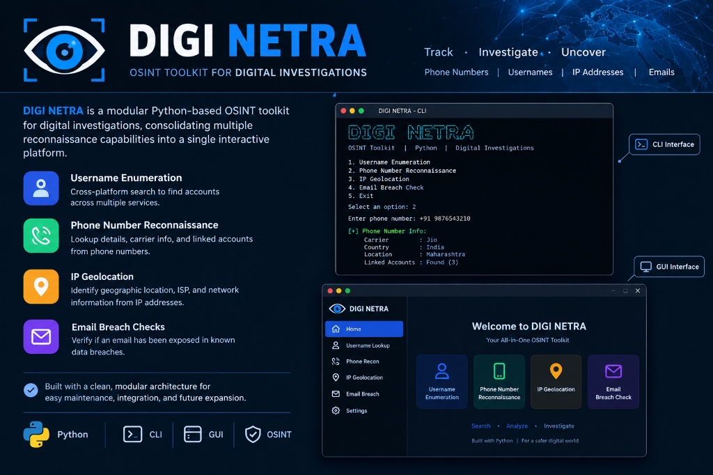
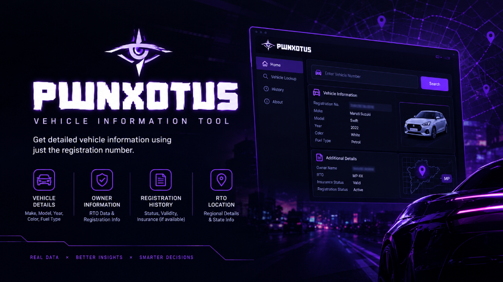
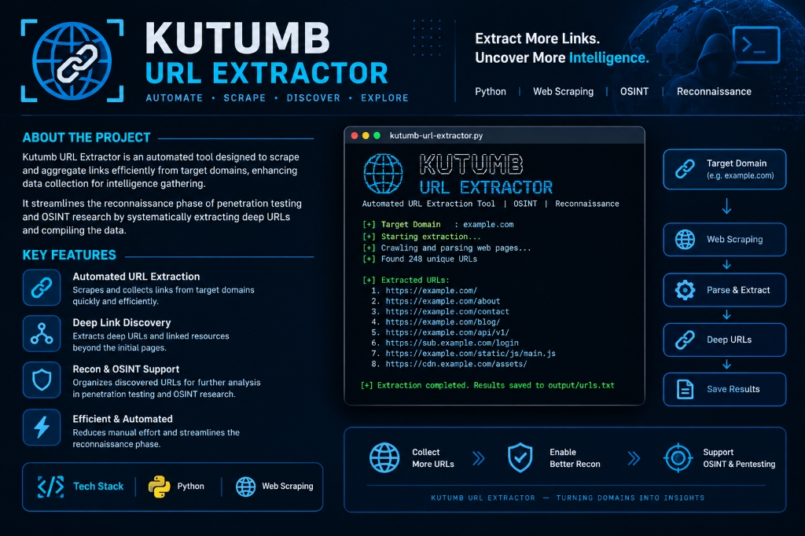

Welcome! I'm Ranjeet Bisen, a passionate Cybersecurity Professional, Penetration Tester, and OSINT Researcher dedicated to finding vulnerabilities before they are exploited.
Cybersecurity professional with hands-on experience in penetration testing, vulnerability assessment, and OSINT-driven threat research. Ranked in the top 1% across 40+ national and international CTF competitions, including a 3rd-place finish among 850+ teams.
Built and deployed 2 independent security/backend tools using Python and FastAPI. Skilled in Web/API VAPT, OWASP Top 10, and SOC operations, with a strong record of applying offensive-security skills to real-world security engineering challenges.
TOP TIER IN
40+ CTFs
STUDENT
2024 - 2027
YEARS
EXPERIENCE
Python, SQL, JavaScript, PHP, HTML, CSS
Penetration Testing, Vulnerability Assessment, Web/API VAPT, OWASP Top 10
Nmap, Burp Suite, Wireshark, Metasploit, Nikto, Splunk (SIEM)
Git, Linux, Docker, OSINT, Threat Intelligence, SOC Operations, Incident Response

Built a modular Python OSINT toolkit for digital investigations, tracing phone numbers, usernames, IP addresses, and emails through a simple, interactive CLI.
Implemented cross-platform username enumeration, phone number reconnaissance, IP geolocation, and email breach checks in a single tool.
Stack: Python, OSINT frameworks, Git, GitHub

Built and deployed a full-stack web application that retrieves complete vehicle records — registration, owner, insurance, and challan history — from a single registration number.
Designed and implemented a FastAPI backend in Python to process lookup requests and return structured vehicle data in real time; live-deployed and publicly accessible.
Stack: Python, FastAPI

Developed an automated URL extraction tool designed to scrape and aggregate links efficiently from target domains, enhancing data collection for intelligence gathering.
Streamlines the reconnaissance phase of penetration testing and OSINT research by systematically extracting deep URLs and compiling the data.
Stack: Python, Web Scraping